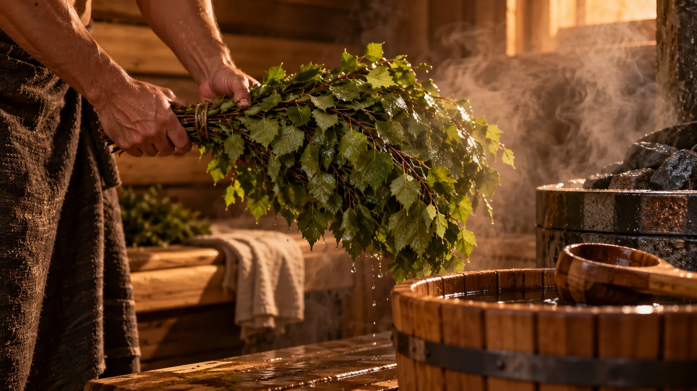

ЧАСТНЫЙ СОЧИ · БАННЫЙ ТУР
Банный день,
ради которого
едут в Сочи
Пармастер ведет парение лично. Мы подбираем площадку, размещение и дорогу под людей, которые приедут вместе с вами.
Открыть банный деньЧАСТНАЯ ПРОГРАММА · ПО ЗАПРОСУЛИСТАЙТЕ ВНИЗ
КАК СОБРАНА ПОЕЗДКА
Сначала пармастер и баня, затем все остальное
Площадку и состав парения покажем до бронирования. Отель и маршрут выбираем после того, как узнаем даты, число гостей и желаемый темп.

Веник в парной01 / ГЛАВНОЕ СОБЫТИЕБаняс пармастеромУзнать о паренииНомер у моря02 / ГДЕ ОСТАТЬСЯНочь у моря
или в горахСмотреть отелиГорная дорога03 / КУДА ПОЕХАТЬСочи за окном

автомобиляВыбрать маршрут
ЕЩЕ ОДИН ДЕНЬ В СОЧИ
Море
или высота
После банного дня можно выйти в море на яхте или подняться над Красной Поляной. Подберем вариант, если он подходит по погоде и вашим датам.
Яхты и полеты